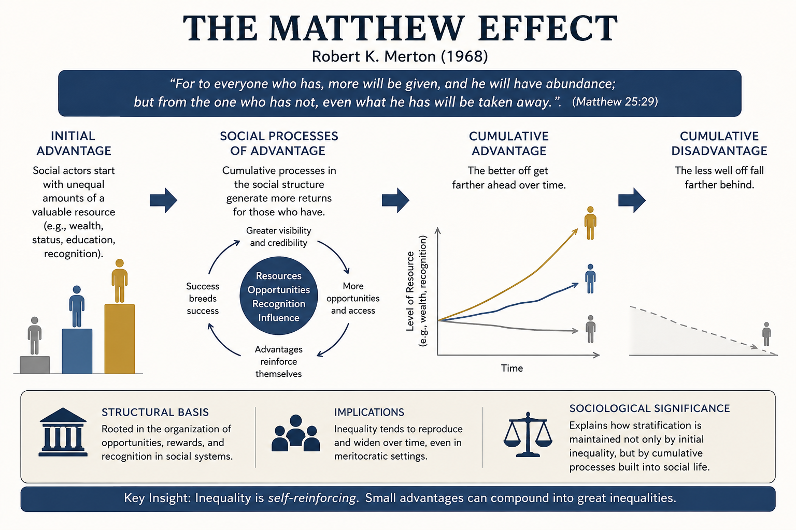

LLMs sharpen the Matthew effect in citations
The Matthew effect is a 1968 observation by sociologist Robert K. Merton. In science, credit accrues to people who already have it. Two researchers do the same work; the famous one gets cited, the unknown one is footnoted if they are lucky. Merton took the phrase from the gospel of Matthew: “For unto every one that hath shall be given.” In citation data it shows up as a power law. A small number of papers collect most of the citations, and once a paper joins the famous tier, the rate at which it accrues new citations only rises.

A new line of work asks what happens to that dynamic when the tool suggesting citations is an LLM.
The experimental finding
Algaba and colleagues fed GPT-4, GPT-4o, and Claude 3.5 the abstracts of 166 ML papers from AAAI, NeurIPS, ICML, and ICLR, and asked each model to suggest references. The LLM-suggested references had much higher median citation counts than the papers’ own references, even after controlling for publication year, venue, title length, and author count. A follow-up scaled the test to ten thousand papers and around 275,000 generated references across domains. The bias toward already-highly-cited, shorter-titled, somewhat more recent work persisted, even though the suggestions looked semantically appropriate inside existing citation graphs.
What this means for a working researcher
LLMs are pattern matchers over a corpus where the Matthew effect was already baked in. The thing they are good at, returning the most plausible reference for an idea, is exactly the thing that surfaces the already-famous paper over the equally-valid lesser-known one. Wieczorek and co-authors call this the status-quo scenario for LLM use in literature search: existing inequalities reproduce, possibly faster.
The career-level evidence is not in yet. Nobody has shown that LLM use is, on its own, tilting hiring, tenure, or funding outcomes. But citations feed those decisions, and citations are the channel where the bias has now been measured.
Treat the first three references your LLM suggests as a starting list, not the final list.
P.S. Two centuries before the gospel of Matthew, the Book of Daniel (2:21) made the same point in Aramaic: יָהֵב חָכְמְתָא לְחַכִּימִין וּמַנְדְּעָא לְיָדְעֵי בִינָה. “He gives wisdom to the wise, and knowledge to those who know understanding.” The traditional reading is that wisdom flows to those who already have it. Maybe Merton should have called it the Daniel effect. ¯_(ツ)_/¯
References
Algaba, A., Mazijn, C., Holst, V., Tori, F., Wenmackers, S., & Ginis, V. (2025). Large Language Models Reflect Human Citation Patterns with a Heightened Citation Bias. In Proceedings of NAACL 2025, 6844-6853.
Algaba, A., Holst, V., Tori, F., Mobini, M., Verbeken, B., Wenmackers, S., & Ginis, V. (2025). How Deep Do Large Language Models Internalize Scientific Literature and Citation Practices? arXiv:2504.02767.
Baert, P., Dorschel, R., Hall, M., Higgins, I., McPherson, E., & Philip, S. (2025). Dialogues Towards Sociologies of Generative AI. Social Science Computer Review (online first).
Wieczorek, O., Steinhardt, I., Schmidt, R., Mauermeister, S., & Schneijderberg, C. (2024). The Bot Delusion: Large Language Models and Anticipated Consequences for Academics’ Publication and Citation Behavior. Futures 166: 103537.